อาหารทะเล
ปลาเฮอร์ริงแปซิฟิก
ニシン にしん
อร่อยที่สุดในเดือน มี.ค., เม.ย., พ.ค.
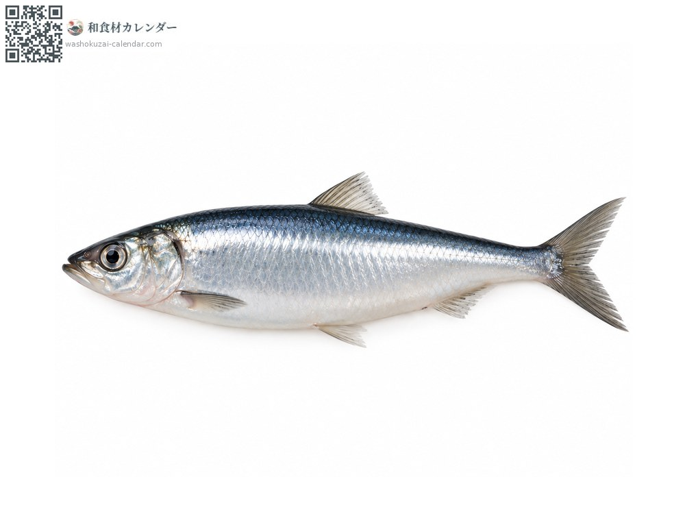
ช่วงที่อร่อยที่สุด
ม.ค.
ก.พ.
มี.ค.
เม.ย.
พ.ค.
มิ.ย.
ก.ค.
ส.ค.
ก.ย.
ต.ค.
พ.ย.
ธ.ค.
ช่วงอร่อยที่สุดมีจำหน่าย
วิธีปรุง
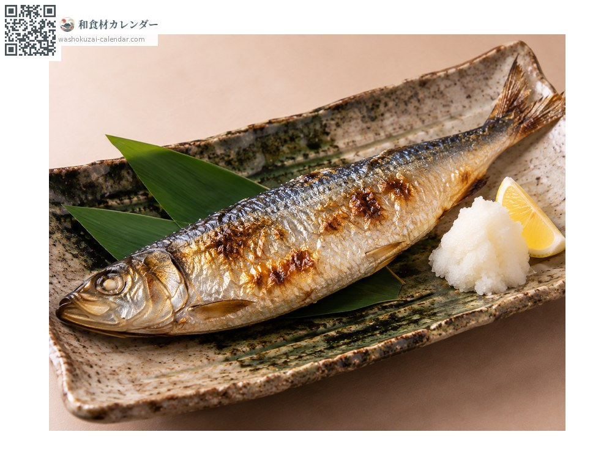
ย่างเกลือ
ย่างทั้งตัว มันเยอะและหอม
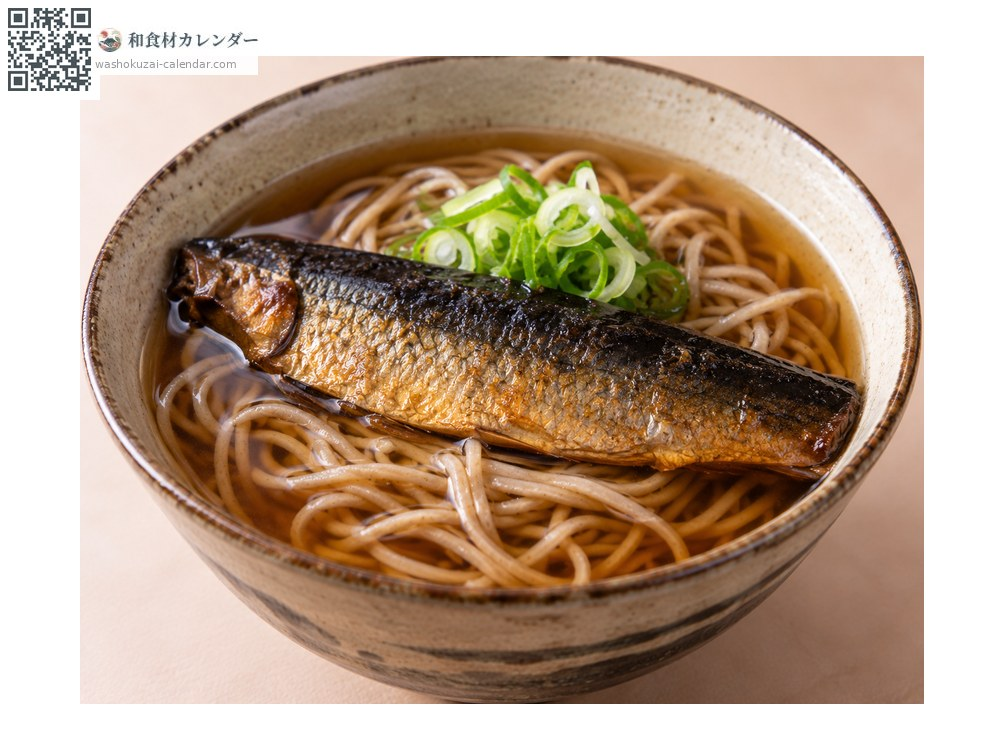
มิงากินิชิน
แช่ปลาแห้งให้คืนตัวแล้วตุ๋น ใส่บนโซบะก็ได้
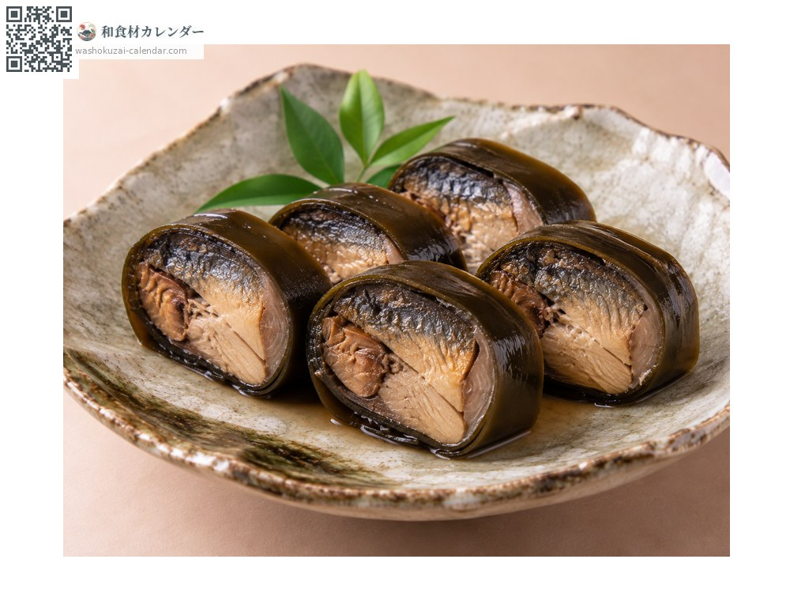
ม้วนคมบุ
ห่อด้วยสาหร่ายคมบุแล้วตุ๋นรสหวานเค็ม เป็นอาหารปีใหม่
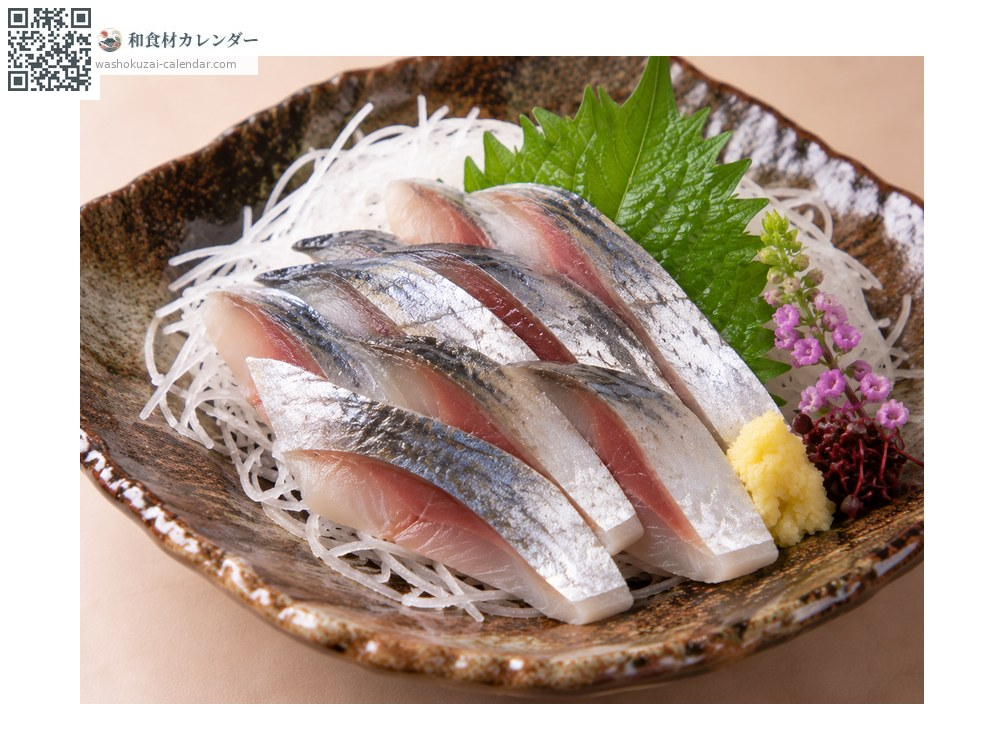
ซาชิมิ
ถ้าสดมากกินดิบได้ มันเข้มข้น
วิธีเลือก
ลำตัวเป็นประกายสีน้ำเงินและแน่นตึง ตาใส ท้องแข็งแรง
วิธีเก็บรักษา
มันเยอะจึงเสียเร็ว ควักไส้แล้วแช่เย็น ใช้ภายในวันรุ่งขึ้น
แหล่งผลิตหลัก
เกร็ดน่ารู้
มันแห่เข้าชายฝั่งฮอกไกโดเพื่อวางไข่ในฤดูใบไม้ผลิ จึงได้ชื่อว่าปลาผู้บอกฤดูใบไม้ผลิ ไข่ของมันเรียกว่าคาซุโนโกะ ขาดไม่ได้ในเทศกาลปีใหม่ สมัยก่อนจับได้มหาศาล ปลาแห้งที่เรือคิตามาเอะขนไปเกียวโตเป็นต้นกำเนิดของนิชินโซบะ
วัตถุดิบที่อร่อยที่สุดในช่วงเดียวกัน
 ปลาอาจิ (ปลาทูแขกญี่ปุ่น)
ปลาอาจิ (ปลาทูแขกญี่ปุ่น)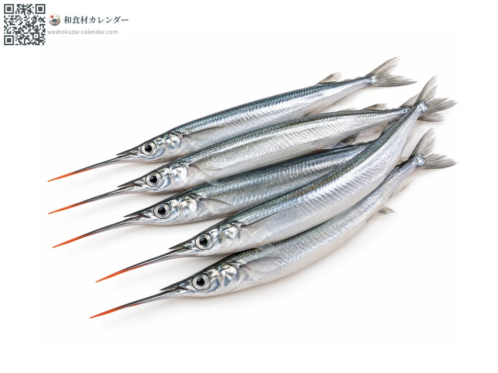
ปลาเข็ม (ซาโยริ)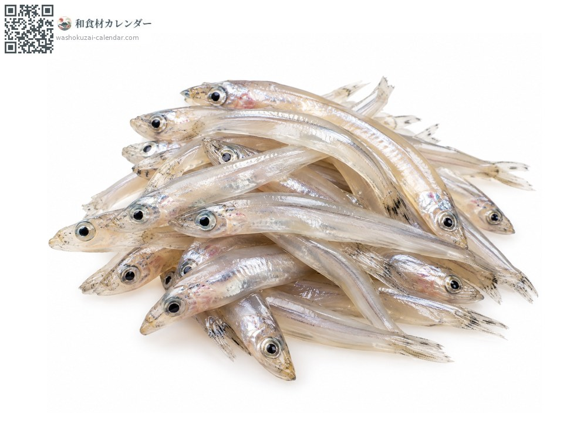
ปลาน้ำแข็ง (ชิราอุโอะ)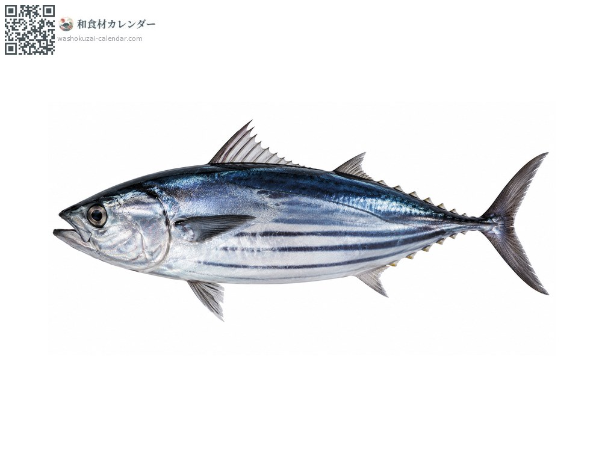
ปลาคัตสึโอะ (ปลาโอ) ปลาบิน
ปลาบิน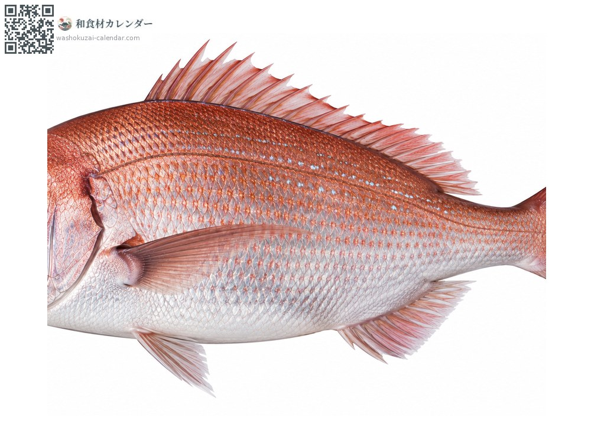
ปลาไท (ปลากะพงแดงญี่ปุ่น)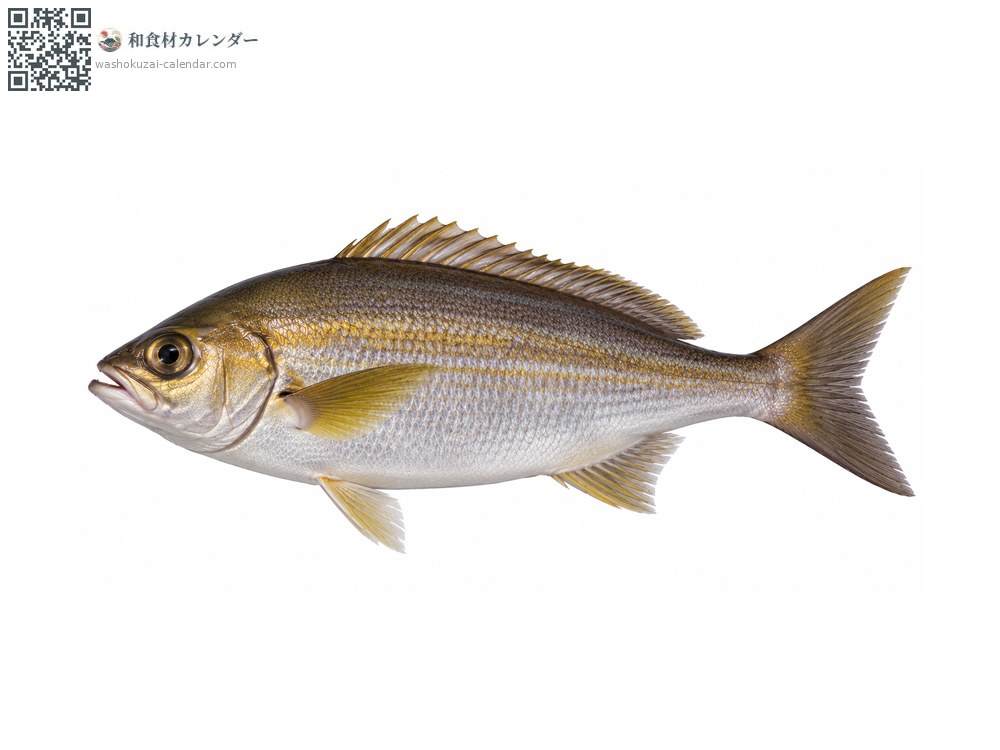
ปลาอิซากิ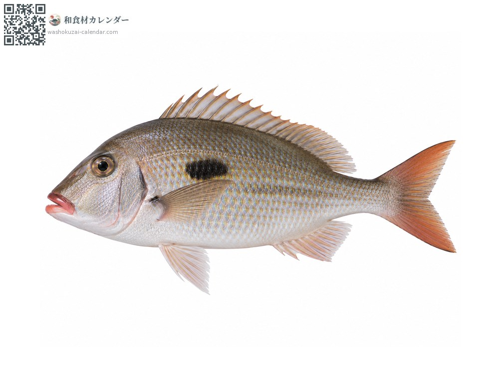
ปลาตะมัน (ปลาทรายขาวจุดดำ)